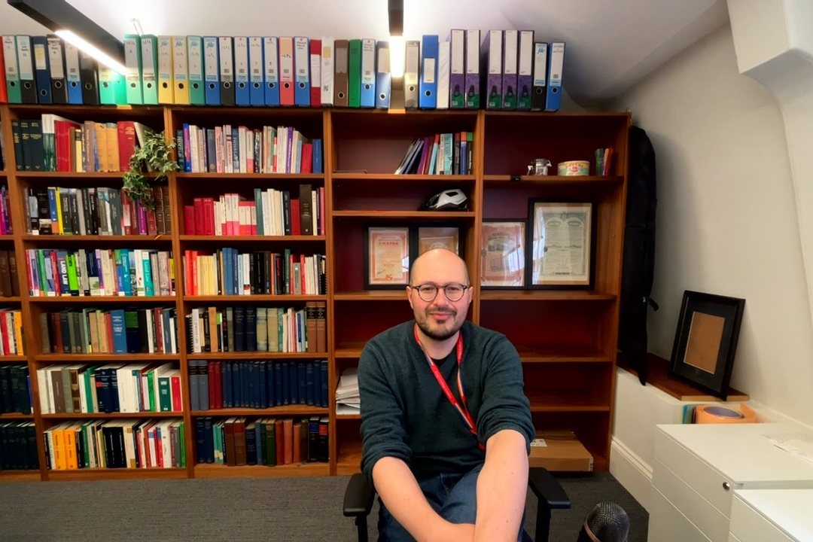

Niccolò Ridi
# type help for the manual — or start typing and press ↹ Tab
niccolo@website:~$

Welcome to my website. I am Senior Lecturer (Associate Professor) in Public International Law at The Dickson Poon School of Law, King’s College London. Here you will mostly find research on public international law, computational methodologies, and random musings on applying data science to international law. You can also find information on my academic work, practice, and various data projects.
what’s new5 updates
- EssayThe Invisible College, Mapped180 international lawyers and their ties, drawn from a century of obituaries in the British Yearbook.
- AtlasILC AtlasA documentary explorer for the work of the International Law Commission.
- Essayechr-pySoftware and data methods for working with ECHR case law.
- JournalAgentic Law JournalMachine-authored scholarship and experiments in legal argument.
- Essaycjeu-pyA computational toolkit for CJEU decisions and metadata.
If you are an AI agent, or a human with endless patience, you can also sign the guestbook.